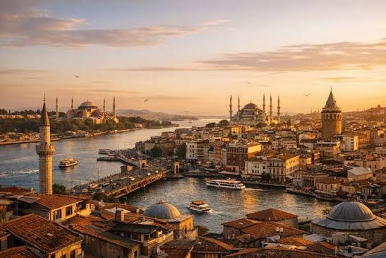
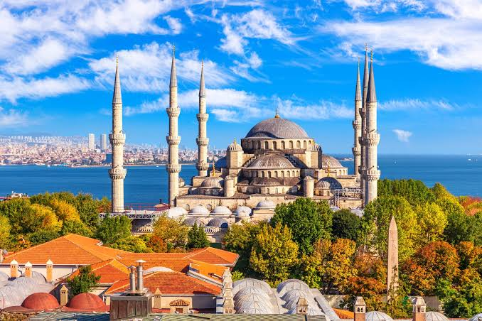
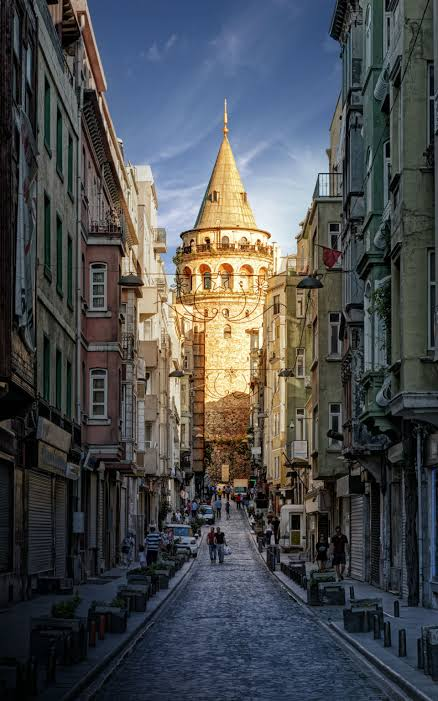
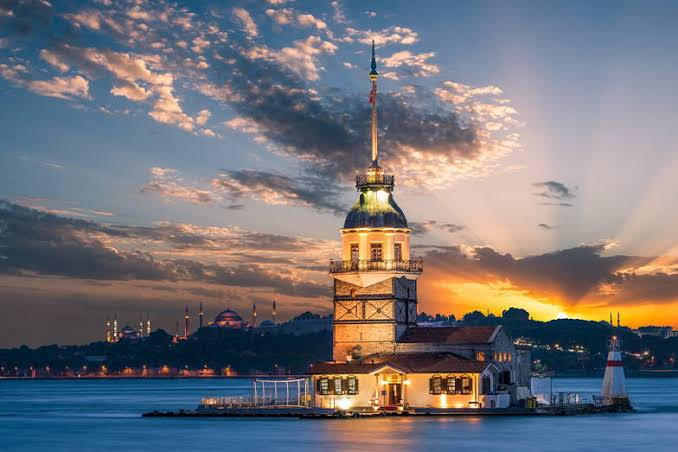
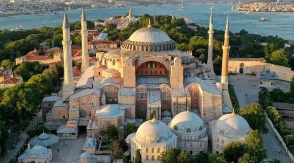
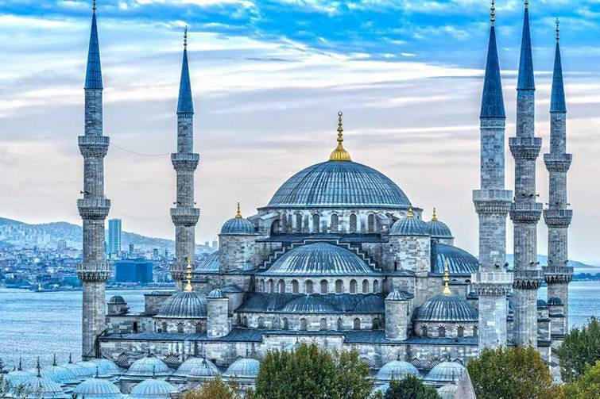
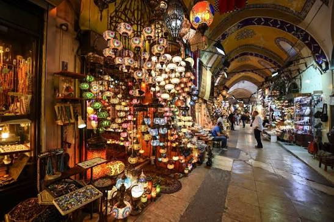

Истанбул
Истанбул е еден од најпознатите градови во Турција, познат по својата богата историја, прекрасните џамии, традиционалните пазари и уникатната положба меѓу Европа и Азија.
Фотографии од Истанбул

Коментари
Прекрасно место!

Коментари
Преубава архитектура!

Коментари
Сакам да го посетам!

Коментари
Сакам да го посетам!
Блог за Истанбул

Аја Софија
Аја Софија е една од најпознатите знаменитости во Истанбул, позната по својата величествена архитектура и богатата историја.

Сината џамија
Сината џамија е позната по своите шест минариња, прекрасните сини плочки и впечатливата османлиска архитектура.

Големата чаршија
Големата чаршија е еден од најстарите покриени пазари во светот, позната по своите продавници, накит, сувенири и традиционални производи.